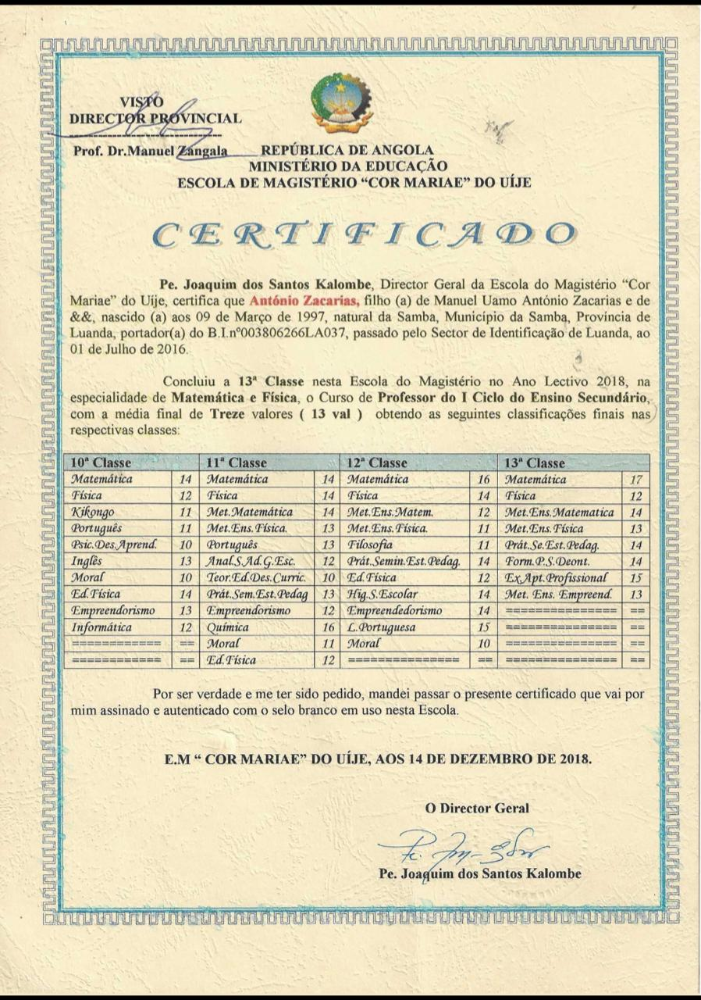
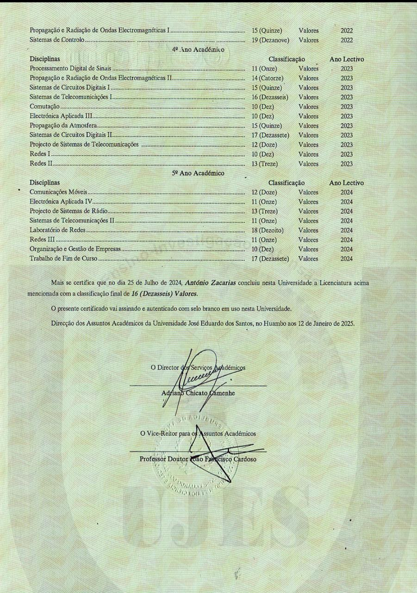

SOBRE MIM
Meu nome é António Zacarias, filho Manuel U. A. Zacarias e de Clementina da Silva Jacinto, de 28 anos de idade, natural da Samba, Província de Luanda.
Sou professor de Matemática, Sistemas digitais, instalações eléctricas, máquinas eléctricas e tecnologias eléctricas.
ENSINO MÉDIO
Eu sou formado como técnico médio em matemática e física na escola de formação de professores "COR MARIAE DO UIGE"
É uma instituição do ensino médio, que já tem formado muitos professores e sendo uma das instituições que alavancou o nome da província como PROVÍNCIA DOS MATEÁTICOS.
Terminei o médio nesta mesma instituição com sucesso, como se verifica no certificado abaixo:
ENSINO SUPERIOR
Sou lincenciado em Engenharia Electrónica e telecomunicações no Instituto Politécnico da Universidade José Eduardo dos Santos, na Província do Huambo.


Conclui com sucesso, conforme se verifica no documento abaixo:
